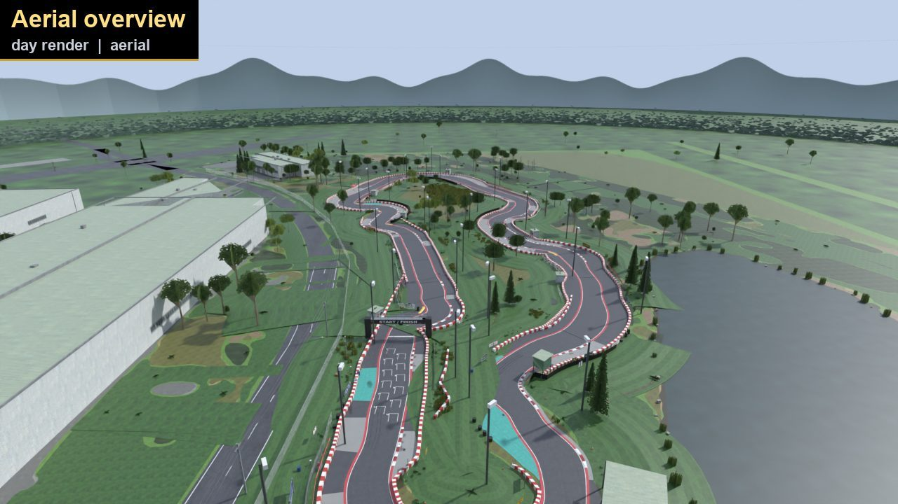
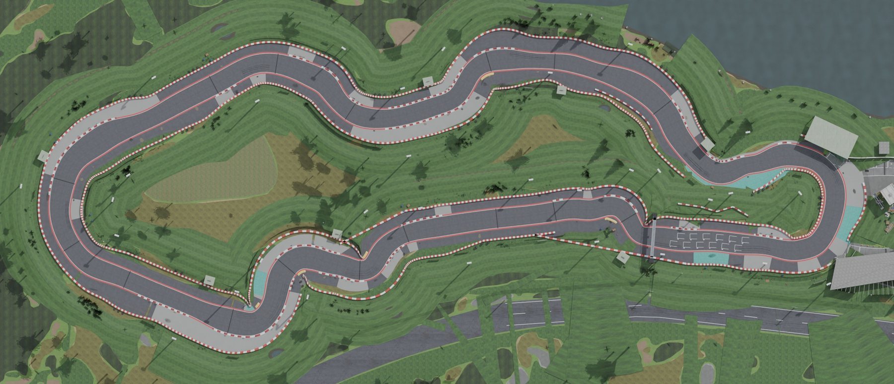

—
—

A real kart circuit — 581 m, thirteen named corners, the kerbs, the anti-cut blocks, the floodlights — measured off georeferenced imagery and rebuilt by hand for Assetto Corsa. Not a guess. Not for sale.
I race here. I wanted this circuit in the sim — the real corner names, the real kerbs, the yellow anti-cut humps, the pit loop hairpin, the floodlit evening sessions. So instead of sketching something that felt about right, the model was made to sit on top of real imagery of the venue and nudged until the two lined up, corner by corner.
Every pixel that ships is either measured geometry, OpenStreetMap data, or a texture we made or downloaded under CC0. The satellite imagery was used only as a ruler; none of it is in the build. That is the whole reason this can be public.
Offline renders of the finished build, station by station around the lap — Bridge Bend to the Pit Loop. Press play and ride it, or jump straight to a corner.
Thirteen sections, taken from the venue's own corner map. Tap any card for the full frame — every corner is rendered twice, in daylight and under the floodlights.
Drag the handle. These renders are a preview of the in-game CSP lighting, not an artistic mood — the same pole positions, the same cones, the same numbers that ship in the track's config.
Wide, long and soft on purpose: ~27 overlapping cones sum to an even wash instead of eight bright pools with dark gaps. Poles are placed by one helper function that both the geometry and the lighting config read, so they can never drift apart — and the build asserts every pole is clear of the racing surface, the run-off and the pit lane.
Nine steps, no shortcuts: fetch the data, trace the asphalt, fit a centreline, build the mesh, texture it, package it, then verify everything twice and look at every render.
The 3D model is dropped on top of real imagery of the venue and scored segment by segment. Here is the honest result, including the bits that are still wrong.
Each bar is one 20-metre slice of the lap. IoU compares the model's track area with the real asphalt: 1.00 would be a perfect match. The tall run through the middle of the lap is where the layout is most confidently right; the dips near 380–500 m and the pit-loop end are the stretch still being iterated.
| Measure | Value |
|---|---|
| Overlay overlap (IoU) | — |
| Model-only area (model vs real) | — |
| Imagery-only area (real vs model) | — |
| Our centreline | — |
| Venue's quoted lap | 650 m (outside edge) |
| Length gap vs RaceFacer's 620 m | 6.3% |
| Track width (min / median / max) | 4.8 / 6.2 / 8.3 m |
The 650 m the venue quotes is the outside edge of the loop, and an outside edge is always longer than the centreline — 581 + 2·π·3.1 ≈ 600 m predicted, against the venue's 650 m (7.6% out). Most of the "missing" length is just which edge you measure along.
Every build runs an independent reader over the finished kn5 and refuses to pass if anything is off.
Spawn points, pit boxes, start line and timing gates are all asserted on the centreline with the right heading; road normals must point up; every physics mesh must map to a known surface key; and in the public build any texture that isn't CC0 or generated fails the audit. Latest run: overall PASS.

Asphalt is graded from CC0 photo scans; kerbs, barriers, tyres, boards, the bus and the water are generated in code. Same material set you see in every frame above.
| Property | Value |
|---|---|
| Track id | lemans_lakeside |
| Direction | Clockwise |
| Centreline / quoted | 581 m / 650 m |
| Width (min / median / max) | 4.8 / 6.2 / 8.3 m |
| Sections | 13 named |
| Pit boxes / grid slots | 12 / 12 |
| Surfaces | ROAD · KERB · GRASS · PIT · WALL · RUNOFF |
| Elevation | Flat (not yet modelled) |
| Physics / model | 51.8 MB kn5, v5 |
| Version | 0.5.1 |
This build is made to be driven, not sold. It is free for personal use and it is not affiliated with the venue. The realistic gaps — flat ground, no elevation pass, an overlay fit that is 78% rather than 95%, and the handful of corners still being chased — are listed openly rather than hidden, because a sim track is judged on the lap, not the launch page.